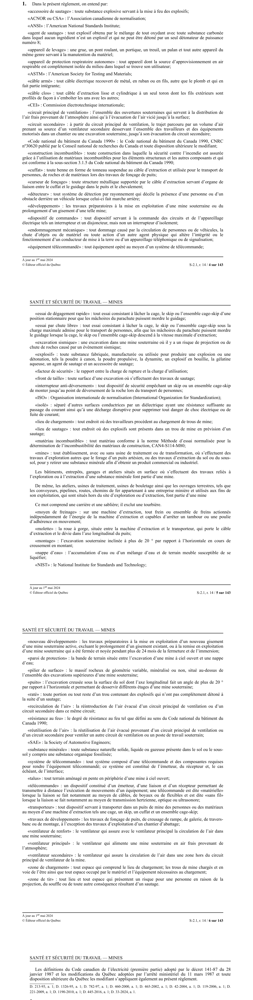

art-1-RSSM : définitions générales RSSM
L'article 1 définit l'ensemble des termes techniques employés dans le règlement, notamment : accessoire de sautage, agent de sautage, appareil de levage. Il s'agit d'une disposition de définition.
- Circuit principal de ventilation, circuit secondaire, cuffat, explosif, facteur de sécurité, mine, transporteur.
🌐 LegisQuébec · 📄 PDF officiel
Texte officiel
Dans le présent règlement, on entend par:
«accessoire de sautage» : toute substance explosive servant à la mise à feu des explosifs;
«ACNOR ou CSA» : l’Association canadienne de normalisation;
«ANSI» : l’American National Standards Institute;
«agent de sautage» : tout explosif obtenu par le mélange de tout oxydant avec toute substance carbonée dans lequel aucun ingrédient n’est un explosif et qui ne peut être détoné par un seul détonateur de puissance numéro 8;
«appareil de levage» : une grue, un pont roulant, un portique, un treuil, un palan et tout autre appareil du même genre servant à la manutention du matériel;
«appareil de protection respiratoire autonome» : tout appareil dont la source d’approvisionnement en air respirable est complètement isolée du milieu dans lequel se trouve son utilisateur;
«ASTM» : l’American Society for Testing and Materials;
«câble armé» : tout câble électrique recouvert de métal, en ruban ou en fils, autre que le plomb et qui en fait partie intégrante;
«câble clos» : tout câble d’extraction lisse et cylindrique à un seul toron dont les fils extérieurs sont profilés de façon à s’emboîter les uns avec les autres;
«CEI» : Commission électrotechnique internationale;
«circuit principal de ventilation» : l’ensemble des ouvertures souterraines qui servent à la distribution de l’air frais provenant de l’atmosphère ainsi qu’à l’évacuation de l’air vicié jusqu’à la surface;
«circuit secondaire» : à partir du circuit principal de ventilation, le trajet parcouru par un volume d’air prenant sa source d’un ventilateur secondaire desservant l’ensemble des travailleurs et des équipements motorisés dans un chantier ou une excavation souterraine, jusqu’à son évacuation du circuit secondaire;
«Code national du bâtiment du Canada 1990» : le Code national du bâtiment du Canada 1990, CNRC no30620 publié par le Conseil national de recherches du Canada et toute disposition ultérieure le modifiant;
«construction incombustible» : toute construction dans laquelle la sécurité contre l’incendie est assurée grâce à l’utilisation de matériaux incombustibles pour les éléments structuraux et les autres composants et qui est conforme à la sous-section 3.1.5 du Code national du bâtiment du Canada 1990;
«cuffat» : toute benne en forme de tonneau suspendue au câble d’extraction et utilisée pour le transport de personnes, de roches et de matériaux lors des travaux de fonçage de puits;
«curseur de fonçage» : toute structure métallique supportée par le câble d’extraction servant d’organe de liaison entre le cuffat et le guidage dans le puits et le chevalement;
«détecteur» : tout système de détection par rayonnement qui décèle la présence d’une personne ou d’un obstacle derrière un véhicule lorsque celui-ci fait marche arrière;
«développement» : les travaux préparatoires à la mise en exploitation d’une mine souterraine ou du prolongement d’un gisement d’une telle mine;
«dispositif de commande» : tout dispositif servant à la commande des circuits et de l’appareillage électrique tels un interrupteur et un disjoncteur, mais non un interrupteur d’isolement;
«endommagement mécanique» : tout dommage causé par la circulation de personnes ou de véhicules, la chute d’objets ou de matériel ou toute action d’un autre agent physique qui altère l’intégrité ou le fonctionnement d’un conducteur de mise à la terre ou d’un appareillage téléphonique ou de signalisation;
«équipement télécommandé» : tout équipement opéré au moyen d’un système de télécommande;
«essai de dégagement rapide» : tout essai consistant à lâcher la cage, le skip ou l’ensemble cage-skip d’une position stationnaire pour que les mâchoires du parachute puissent mordre le guidage;
«essai par chute libre» : tout essai consistant à lâcher la cage, le skip ou l’ensemble cage-skip sous la charge maximale admise pour le transport de personnes, afin que les mâchoires du parachute puissent mordre le guidage lorsque la cage, le skip ou l’ensemble cage-skip descend à la vitesse maximale d’extraction;
«excavation sismique» : une excavation dans une mine souterraine où il y a un risque de projection ou de chute de roches causé par un évènement sismique;
«explosif» : toute substance fabriquée, manufacturée ou utilisée pour produire une explosion ou une détonation, tels la poudre à canon, la poudre propulsive, la dynamite, un explosif en bouillie, la gélatine aqueuse, un agent de sautage et un accessoire de sautage;
«facteur de sécurité» : le rapport entre la charge de rupture et la charge d’utilisation;
«front de taille» : toute surface d’une excavation où s’effectuent des travaux de sautage;
«interrupteur anti-déversement» : tout dispositif de sécurité empêchant un skip ou un ensemble cage-skip de monter jusqu’au point de déversement de la roche lors du transport de personnes;
«ISO» : Organisation internationale de normalisation (International Organization for Standardization);
«isolé» : séparé d’autres surfaces conductrices par un diélectrique ayant une résistance suffisante au passage du courant ainsi qu’à une décharge disruptive pour supprimer tout danger de choc électrique ou de fuite de courant;
«lieu de chargement» : tout endroit où des travailleurs procèdent au chargement de trous de mine;
«lieu de sautage» : tout endroit où des explosifs sont présents dans un trou de mine en prévision d’un sautage;
«matériau incombustible» : tout matériau conforme à la norme Méthode d’essai normalisée pour la détermination de l’incombustibilité des matériaux de construction, CAN4-S114-M80;
«mine» : tout établissement, avec ou sans usine de traitement ou de transformation, où s’effectuent des travaux d’exploration autres que le forage d’un puits artésien, ou des travaux d’extraction du sol ou du sous- sol, pour y retirer une substance minérale afin d’obtenir un produit commercial ou industriel.
Les bâtiments, entrepôts, garages et ateliers situés en surface où s’effectuent des travaux reliés à l’exploration ou à l’extraction d’une substance minérale font partie d’une mine.
De même, les ateliers, usines de traitement, usines de bouletage ainsi que les ouvrages terrestres, tels que les convoyeurs, pipelines, routes, chemins de fer appartenant à une entreprise minière et utilisés aux fins de son exploitation, qui sont situés hors du site d’exploration ou d’extraction, font partie d’une mine
Ce mot comprend une carrière et une sablière; il exclut une tourbière.
«moyen de freinage» : sur une machine d’extraction, tout frein ou ensemble de freins actionnés indépendamment de l’énergie de la machine d’extraction et capables d’arrêter un tambour ou une poulie d’adhérence en mouvement;
«molette» : la roue à gorge, située entre la machine d’extraction et le transporteur, qui porte le câble d’extraction et le dévie dans l’axe longitudinal du puits;
«montage» : l’excavation souterraine inclinée à plus de 20 ° par rapport à l’horizontale en cours de creusement en montant;
«nappe d’eau» : l’accumulation d’eau ou d’un mélange d’eau et de terrain meuble susceptible de se liquéfier;
«NIST» : le National Institute for Standards and Technology;
«nouveau développement» : les travaux préparatoires à la mise en exploitation d’un nouveau gisement d’une mine souterraine active, excluant le prolongement d’un gisement existant, ou à la remise en exploitation d’une mine souterraine qui a été fermée et noyée pendant plus de 24 mois de la fermeture et de l’immersion;
«paroi de protection» : la bande de terrain située entre l’excavation d’une mine à ciel ouvert et une nappe d’eau;
«pilier de surface» : le massif rocheux de géométrie variable, minéralisé ou non, situé au-dessus de l’ensemble des excavations supérieures d’une mine souterraine;
«puits» : l’excavation creusée sous la surface du sol dont l’axe longitudinal fait un angle de plus de 20 ° par rapport à l’horizontale et permettant de desservir différents étages d’une mine souterraine;
«raté» : toute portion ou tout reste d’un trou contenant des explosifs qui n’ont pas complètement détoné à la suite d’un sautage;
«recirculation de l’air» : la réintroduction de l’air évacué d’un circuit principal de ventilation ou d’un circuit secondaire dans ce même circuit;
«résistance au feu» : le degré de résistance au feu tel que défini au sens du Code national du bâtiment du Canada 1990;
«réutilisation de l’air» : la réutilisation de l’air évacué provenant d’un circuit principal de ventilation ou d’un circuit secondaire pour ventiler un autre circuit de ventilation ou un poste de travail souterrain;
«SAE» : la Society of Automotive Engineers;
«substance minérale» : toute substance naturelle solide, liquide ou gazeuse présente dans le sol ou le sous- sol y compris une substance organique fossilisée;
«système de télécommande» : tout système composé d’une télécommande et des composantes requises pour rendre l’équipement télécommandé; ce système est constitué de l’émetteur, du récepteur et, le cas échéant, de l’interface;
«talus» : tout terrain aménagé en pente en périphérie d’une mine à ciel ouvert;
«télécommande» : un dispositif constitué d’un émetteur, d’une liaison et d’un récepteur permettant de transmettre à distance l’exécution de mouvements d’un équipement; une télécommande est dite «matérielle» lorsque la liaison se fait notamment au moyen de câbles, de boyaux ou de flexibles et est dite «sans fil» lorsque la liaison se fait notamment au moyen de transmission hertzienne, optique ou ultrasonore;
«transporteur» : tout dispositif servant à transporter dans un puits de mine des personnes ou des matériaux au moyen d’une machine d’extraction tels une cage, un skip, un cuffat et un ensemble cage-skip;
«travaux de développement» : les travaux de fonçage de puits, de creusage de rampe, de galerie, de travers- banc ou de montage, à l’exception des travaux d’exploitation d’un chantier d’abattage;
«ventilateur de renfort» : le ventilateur qui assure avec le ventilateur principal la circulation de l’air dans une mine souterraine;
«ventilateur principal» : le ventilateur qui alimente une mine souterraine en air frais provenant de l’atmosphère;
«ventilateur secondaire» : le ventilateur qui assure la circulation de l’air dans une zone hors du circuit principal de ventilateur de la mine.
«zone de chargement» : tout espace qui comprend le lieu de chargement; les trous de mine chargés et en voie de l’être ainsi que tout espace occupé par le matériel et l’équipement nécessaires au chargement;
«zone de tir» : tout lieu et tout espace qui présentent un risque pour une personne en raison de la projection, du souffle ou de toute autre conséquence résultant d’un sautage.
Les définitions du Code canadien de l’électricité (première partie) adopté par le décret 141-87 du 28 janvier 1987 et les modifications du Québec adoptées par l’arrêté ministériel du 11 mars 1987 et toute disposition ultérieure du Québec les modifiant s’appliquent également au présent règlement.
Texte de l’article 1 RSSM, extrait de la couche texte du PDF officiel (page 4), sans OCR ni retouche. La capture ci-dessous et le PDF font foi.
{kind=link}

Toucher l'image pour l'agrandir🔗 Voir art. 1 RSSM dans le PDF (page 4)
Version : texte officiel du RSSM (RLRQ c. S-2.1, r. 14), à jour au 1er mai 2024 — Éditeur officiel du Québec
Voir aussi
- art. 2 : champ application règlement mines · champ d'application : le règlement s'applique à toute mine ; toutefois, seuls certains articles expressément énumérés.
- art. 3 : respect des normes du règlement · obligation : l'employeur doit respecter les normes du règlement.
- ⚖️ Loi habilitante : LSST
- ↑ Index du bloc : Dispositions générales
Pages qui pointent ici (3)
- art-2-RSSM : champ application règlement mines Recueil législatif
- art-3-RSSM : respect des normes du règlement Recueil législatif
- RSSM : Dispositions générales (art. 1 à 11) Recueil législatif